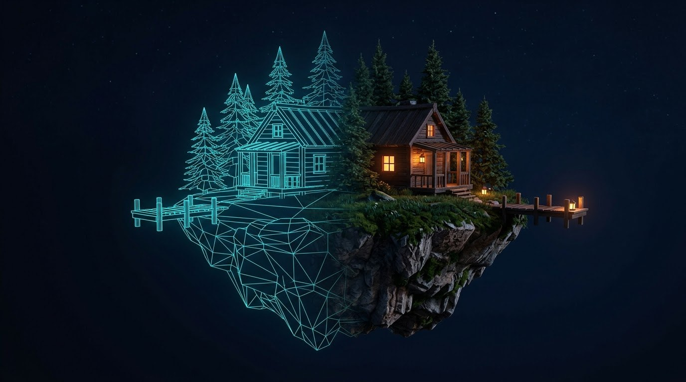

The text is the world.
A Loop3D world is not a pile of files from other tools. It is a short recipe in the engine's own language, Looped Script. The engine reads the recipe and builds everything else: the shapes, the surfaces, the light.

sky "color", color: vec(0.02, 0.03, 0.08), nits: 0.05 loft_shell(size: vec(9, 6, 12), floor: "floorboards", walls: "plaster") glazing_wall(at: vec(0, 0, -6), width: 9, height: 6, across: 6, up: 4) light(vec(0, 3.6, 0), lumens: 800, kelvin: 2700, radius: 0.03)
The Loft, one lamp at a time.
The picture at the top is where this room is heading. The engine gets there in nine steps, and a step counts only when it runs smoothly on a phone. Two are lit.
- The bare room and its wall of glassdone
- Night falls: one bulb, nothing else litdone
- The upper floor and the stairnext
- The stair lights itself
- Beams, columns, brick
- Pools of warm light
- The city outside
- The room in the glass
- Marked and timed on a phone
Things you can use.
The player
Walk through the engine's scenes in your browser. Needs WebGPU: a recent Safari or Chrome.
The editor
Change a world's recipe and watch it change.
The Loft at night
Playable here once the stair is in.
soonFrom the workshop.
- Glowing strips are now real lamps, and many things can be placed, turned and hidden as one group.
- Two lamps join the shared library: a dome pendant and a track of spotlights. It holds 22 pieces.
- Night falls in the Loft: no sun, a near-black sky, one bare bulb, and the camera never brightens the dark.
- Twelve building pieces made, from the stair and its rail to beams, brick and a radiator.